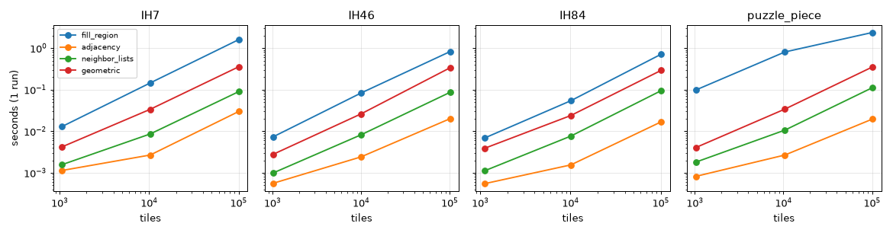
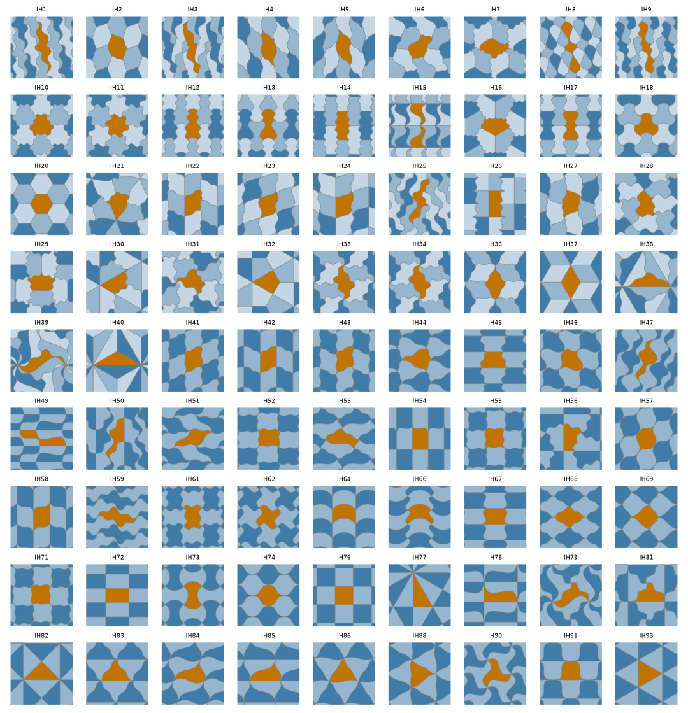

A catalog of the 81 types generated at build time, migration notes from tactile, a benchmark script and page (with an optional tactile comparison) and README badges and citation; strict docs build green.
Phase 5 of the isotile plan, part 2, see isotile-release-readiness. The docs site was not viewed in a browser (the browser extension was not connected); figure 1 is the catalog drawn by the same function as the page, figure 2 the benchmark.
docs/hooks.py is an mkdocs hook that adds catalog.md and 162 SVG files (light and dark, 81 types) to the build from the type data, with the drawing helpers of scripts/make_doc_figures.py. Nothing is written to docs/; the build takes about 13 s with the curved figures (6 s with straight ones). Tables by number of vertices with aspects, parameters, edge shapes, edge shape ids and reflections. A test checks that all 81 types are listed. The figures use example parameters and curves (see the design decision below).scripts/check_links.py (standard library; 2xx after redirects and 429 pass, 3 retries with growing wait, ignore list scripts/link_ignore.txt) and the workflow check-links.yml: weekly (Monday) and manual runs build the site and check the site, README, RELEASING.md and CHANGELOG.md and are the gate; a pull request run checks only the changed Markdown files, skips the docs site (its pages exist only after the deploy) and has continue-on-error, so it never fails the PR. Ignored until they exist: the PyPI project, the PyPI badges, the releases URL and the three new docs pages. Documented in docs/development.md; two offline tests.py, not run).benchmarks/bench.py and the Benchmark page. Operations fill_region, vertices, adjacency, neighbor_lists, geometric_adjacency at about 1,000, 10,000 and 100,000 tiles for IH7, IH46, IH84 and the preset puzzle_piece; check_prototile; with --tactile the scanline fill against tactile up to 10,000 tiles. The lattice and geometric adjacency are compared inside the script. Total run time 26 s with tactile. Not in default CI; tests/test_bench.py runs it at 60 tiles.plot extra, documentation links, background and citation of Tactile (Kaplan) and Grünbaum and Shephard. api/index.md lists InvalidPrototileError; the adjacency page links the benchmark; deploy-docs.yml builds when scripts/make_doc_figures.py changes.First version: every type at its default parameters with straight edges. Result: IH1 to IH20 are all regular hexagons and many square and triangle types are indistinguishable (figure 1 of the previous revision of this page), so the figures carried no information about the type.
Options considered: (a) group the types with the same default shape into one figure with a list of types; (b) draw each type at example parameters with example curves. Chosen: (b). Reasons: the types of one default shape differ in which edges are related by symmetry and in how many parameters they have, and that is visible only when the parameters are moved and the edges are curved; grouping would hide exactly that, would leave 26 types without parameters in groups of identical figures, and breaks the one-row-per-type table. The rule is stated on the catalog page: each parameter moves 40 percent from its default to the nearer finite end of its safe range (0.15 if both ends are infinite); each edge of shape J, U or S gets a fixed curve of its shape (an asymmetric wave, a bump, an S), different edge shape ids get different curves; edges of shape I stay straight; an invalid prototile halves the step and the curve heights up to four times, then falls back to the default value or a straight edge. The choice is deterministic.
Checks (run locally against example() of docs/hooks.py; the check code is not kept):
| Case | fill_region | adjacency (lattice) | geometric_adjacency | tactile fill | isotile fill |
|---|---|---|---|---|---|
| IH7 | 119 ms | 2.5 ms | 31.8 ms | 27.3 ms | 1.4 ms |
| IH46 | 67.5 ms | 1.7 ms | 23.5 ms | 28.0 ms | 1.9 ms |
| IH84 | 50.8 ms | 1.4 ms | 21.5 ms | 25.1 ms | 1.9 ms |
| puzzle_piece | 610 ms | 1.4 ms | 23.2 ms |
fill is the raw scanline fill in native coordinates (the same tiles and order as tactile, 13 to 20 times faster at 10,000 tiles; 7 to 9 times at 1,000). fill_region does more: frame, overlap test and boundary tiles. The full tables are on the Benchmark page.
mkdocs build -s passes (5.5 s with the catalog); the built site has 85 table rows on the catalog page (81 types and 4 headers) and 162 catalog SVG files; internal links and references are checked by strict mode.scripts/check_links.py with the ignore list reports 0 broken of 34; without the ignore entries it reports exactly the three new pages (404 until deployed) and the theme's fonts.gstatic.com preconnect hint. A deliberately broken link and a 404 page are reported (exit 1). lychee was not used (not installed; downloading a binary was not done). The workflow check-links.yml has not run on GitHub yet.tests/test_bench.py passes.scripts/make_doc_figures.py --check in this environment reports all committed figures as stale (newer matplotlib than the lock file resolves in CI); the script is unchanged by this PR and CI does not run the check.
Figure 2. Time of one run against the number of tiles for four cases, from benchmarks/bench.py (one run per point, so noisier than the best-of-three tables on the page). Growth is about linear; the lattice adjacency is the cheapest operation and fill_region of the curved preset the most expensive.

Figure 1. All 81 types as the catalog page draws them now (example parameters and curves, light theme). Compare with the straight, default-parameter version in which IH1 to IH20 were identical hexagons.